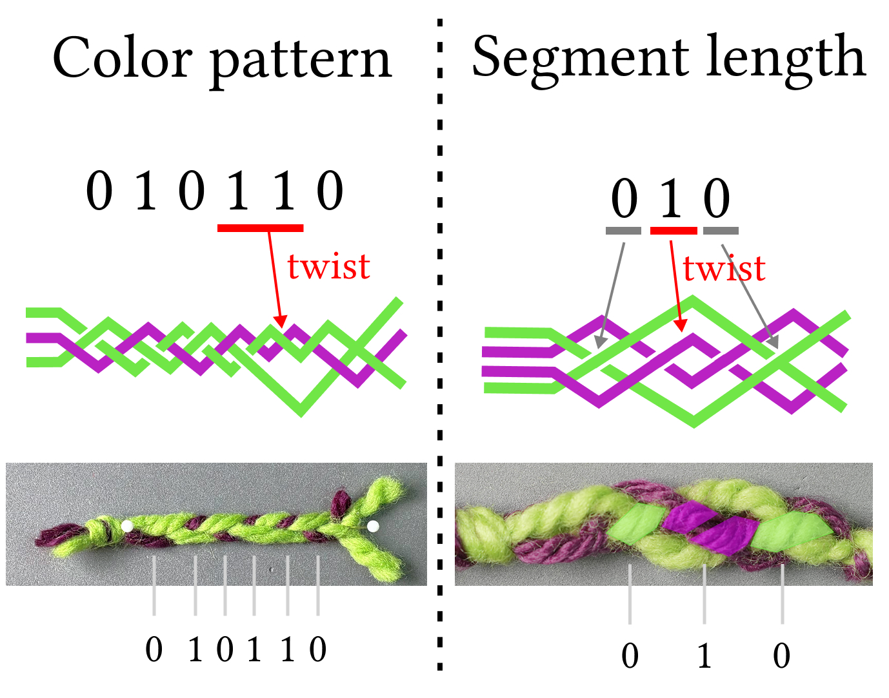

← Back to Portfolio

Research Project · Braiding
BarCord
A braided code that embeds information directly in a cord by changing its repeating color pattern and structural segment length, without adding electronics or special materials.
Physical Representation

A two-strand twist changes either the visible color order or the length of a structural segment. The two encodings shown on the left can be used independently.
0/1
Color pattern
The purple strand facing upward represents 0; facing downward represents 1.
0/1
Segment length
One knot represents 0; two knots represent 1.
Encoding
- Convert the source information into a binary sequence.
- Braid the selected base cord structure.
- Insert two-strand twists at chosen positions.
- Form the bit sequence through changes in color pattern or structural segment length.
Decoding
In the current prototype, the repeating color pattern or structural segment length is inspected visually and each region is manually interpreted as 0 or 1.